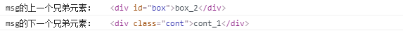

原文出处:本文由博客园博主AI-fisher提供。
原文连接:https://www.cnblogs.com/AI-fisher/p/11121665.html
原文连接:https://www.cnblogs.com/AI-fisher/p/11121665.html
DOM（元素节点）
本文介绍了元素节点的基本操作：增删改查
增
新增一个元素节点分为两步（二者缺一不可），第一步：创建元素节点，第二步：将创建的元素节点插入到指定元素节点中（也就是插入指定元素节点的儿子元素节点）
<div id="box">原本存在的</div>
<script type="text/javascript">
var exDiv = document.querySelector("#box"); //原本存在的div
var myDiv = document.createElement("div"); //新增的div
var mySpan = document.createElement("span"); //新增的span
// 父元素.appendChild(新创建的子元素)
document.body.appendChild(myDiv);
exDiv.appendChild(mySpan);
</script>
删
删除元素节点有两种方式：
- 直接删除获取到的元素节点
<div id="box1">
<p>p1</p>
<p>p2</p>
</div>
<div id="box2">
<span id="span1">span1</span>
<span id="span2">span2</span>
<span id="span3">span3</span>
</div>
<script type="text/javascript">
var exDiv1 = document.getElementById("box1");
exDiv1.remove();
</script>- 先获取要删除的元素节点的父元素节点，然后通过其父元素节点来删除儿子元素节点完成操作。
<div id="box1">
<p>p1</p>
<p>p2</p>
</div>
<div id="box2">
<span id="span1">span1</span>
<span id="span2">span2</span>
<span id="span3">span3</span>
</div>
<script type="text/javascript">
var exDiv1 = document.getElementById("box1");
var exDiv2 = document.getElementById("box2");
var exSpan2 = document.getElementById("span2");
document.body.removeChild(exDiv1);
exDiv2.removeChild(exSpan2);
</script> 这种方式听起来有种多此一举的感觉，因为既然已经选择到了要删除的元素节点，为什么不通过上面介绍的方法直接删除，而是又去找了父元素节点，所以说，如果没有特殊需求，大多数情况下还是直接使用元素节点.remove()方法来实现元素节点的删除。
改
修改元素节点的操作也不常用，实用性较低，测试如下：
<div id="box">
<p>p1</p>
<p>p2</p>
</div>
<script type="text/javascript">
var obox = document.getElementById("box");
console.log(obox.outerHTML);
obox.outerHTML = "<span id='"+ obox.id +"'>"+ obox.innerHTML +"</span>"
</script>网页的结构改变：
控制台的打印信息
可以看到outerHTML是包含了整个元素节点的信息
查（选择器）
基本选择器
- 常规
<div id="box">div_id_1</div>
<div id="box">div_id_2</div>
<div id="char">div_id_2</div>
<div class="cont">div_class_1</div>
<div class="cont">dic_class_2</div>
<div class="pre">dic_class_2</div>
<span>span1</span>
<span>span2</span>
<input type="text" name="user" id="user2" value="user2" />
<input type="text" name="user" id="user1" value="user1" />
<input type="text" name="pass" id="user" value="pass" />
<script type="text/javascript">
//id:返回的是单个元素，就算有多个，获取的也只是一个
var oBox = document.getElementById("box");
console.log("id选择结果：" , oBox);
console.log("直接获取结果的网页内容" , oBox.innerHTML);
console.log("第一个" , oBox[0]);
console.log("第一个的网页内容oBox[0].innerHTML会报错");
console.log("-------------------------------------------");
//class:返回的是数组，就算只有一个，获取的也是数组
var aCont = document.getElementsByClassName("cont");
console.log("class选择结果：" , aCont);
console.log("直接获取结果的网页内容" , aCont.innerHTML);
console.log("第一个" , aCont[0]);
console.log("第一个的网页内容" , aCont[0].innerHTML);
console.log("-------------------------------------------");
//tag:返回的是数组，就算只有一个，获取的也是数组
var aSpan = document.getElementsByTagName("span");
console.log("tag选择结果" , aSpan);
console.log("直接获取结果的网页内容" , aSpan.innerHTML);
console.log("第一个" , aSpan[0]);
console.log("第一个的网页内容" , aSpan[0].innerHTML);
console.log("-------------------------------------------");
//name:返回的是数组，就算只有一个，获取的也是数组，
var aUser = document.getElementsByName("user");
console.log("name选择结果" , aUser);
console.log("直接获取结果的网页内容" , aUser.innerHTML);
console.log("第一个" , aUser[0]);
console.log("第一个的网页内容" , aUser[0].innerHTML);
</script>- ES5新增
ES5新增了方法querySelector()和querySelectorAll()，可以用CSS选择器来做为参数传入，两者搭配可以实现以上所有方法，所以是现在选择器的首选方法。
<ul>
<li>1</li>
<li class="two">2</li>
<li>3</li>
<li>4</li>
</ul>
<div id="msg">
<h2>msg_h2_1</h2>
<h2>msg_h2_2</h2>
<span>msg_span</span>
</div>
<div id="box">box_1</div>
<div id="box">box_2</div>
<div id="box">box_3</div>
<div class="cont">cont_1</div>
<div class="cont">cont_2</div>
<div class="cont">cont_3</div>
<span>span_1</span>
<span>span_2</span>
<span>span_3</span>
<input type="text" name="sex" value="" />
<input type="text" name="sex" value="" />
<input type="text" name="user" value="" />
</body>
<script type="text/javascript">
//返回的是单个元素，就算有多个，获取的也只是第一个
var obj1 = document.querySelector("#box");
var obj2 = document.querySelector(".cont");
var obj3 = document.querySelector("span");
var obj4 = document.querySelector("#msg h2");
var obj5 = document.querySelector("#box,.cont");
console.log("以下为querySelector获取结果");
console.log("#box匹配" , obj1);
console.log(".cont匹配" , obj2);
console.log("span匹配" , obj3);
console.log("#msg h2匹配" , obj4);
console.log("#box,.cont匹配" , obj5);
console.log("----------------------------------------------------------");
//返回的是数组，就算只有一个，获取的也是数组，操作数组中的数据时，要解析
var arr1 = document.querySelectorAll("#box");
var arr2 = document.querySelectorAll(".cont");
var arr3 = document.querySelectorAll("span");
var arr4 = document.querySelectorAll("#msg h2");
var arr5 = document.querySelectorAll("#msg *");
var arr6 = document.querySelectorAll("#box,.cont,span");
console.log("以下为querySelectorAll获取结果");
console.log("#box匹配" , arr1);
console.log(".cont匹配" , arr2);
console.log("span匹配" , arr3);
console.log("#msg h2匹配" , arr4);
console.log("#msg *匹配" , arr5);
console.log("#box,.cont,span匹配" , arr6);
</script>关系选择器
- 父子关系
<div class="msg">
<div class="xbox">
<h2>msg_xbox_1</h2>
<h2>msg_xbox_2</h2>
</div>
<h2>msg_1</h2>
<h2>msg_2</h2>
</div>
<script type="text/javascript">
// 父选子元素:返回的是数组，就算只有一个，获取的也是数组，操作数组中的数据时，要解析
var omsg1 = document.querySelector(".msg");
console.log("msg的子元素：" , omsg1.children);
console.log("msg的第一个子元素：" , omsg1.children[0]);
// 第一个子元素:返回的是单个元素
var omsg2 = document.querySelector(".msg");
console.log("msg的第一个子元素：" , omsg2.firstElementChild);
// 最后一个子元素:返回的是单个元素
var omsg3 = document.querySelector(".msg");
console.log("msg的最后一个子元素：" , omsg3.lastElementChild);
console.log("----------------------------------------");
// 子选父元素:返回的是单个元素
var oxbox = document.querySelector(".xbox");
console.log("xbox的父元素：" , oxbox.parentNode);
</script>
- 兄弟关系
<div id="box">box_1</div>
<div id="box">box_2</div>
<div class="msg">
<div class="xbox">
<h2>msg_xbox_1</h2>
<h2>msg_xbox_2</h2>
</div>
<h2>msg_1</h2>
<h2>msg_2</h2>
</div>
<div class="cont">cont_1</div>
<div class="cont">cont_2</div>
<script type="text/javascript">
// 上一个兄弟元素:返回的是单个元素
var omsg1 = document.querySelector(".msg");
console.log("msg的上一个兄弟元素：" , omsg1.previousElementSibling);
// 下一个兄弟元素:返回的是单个元素
var omsg2 = document.querySelector(".msg");
console.log("msg的下一个兄弟元素：" , omsg2.nextElementSibling)
</script>
总结
（1）元素节点作为操作页面最常用的节点，又可以通过HTML语言中的标签名以及标签的属性名id、class以及name来获取
（2）元素节点的获取方法在ES5中新增了querySelector()和querySelectorAll()方法，这两个方法用CSS选择器来做为参数，两者搭配可以获取到所有元素节点，是获取元素节点的首选方法。
（3）元素节点的新增需要先创建再插入。
（4）元素节点的删除用remove()方法最方便。
（5）元素节点的修改操作存在，但是不常用。